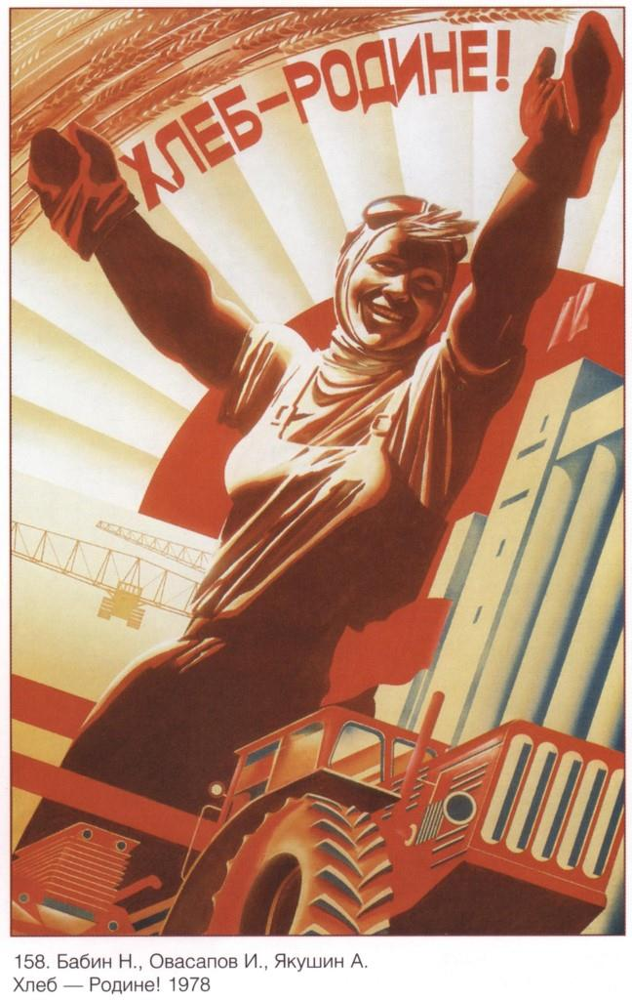

J'ai été poussé à écrire cette chronique par le fait que l'article publié dans le précédent numéro de la revue Méthode a trouvé une réponse parmi les lecteurs français. Il était inattendu de lire que la ligne axiologique construite dans mon article, selon l'opinion, s'est avérée pratiquement identique à la façon de penser des conservateurs français qui pensent aux problèmes du monde moderne. C'est très important du point de vue de la recherche de solutions aux problèmes existants : apparemment, il y a un début proche de l'universel dans les sociétés conservatrices de divers pays et peuples. Les Russes et les Français, se regardant dans les yeux, peuvent se demander : "Que trouvons-nous de commun en nous au moment de la désintégration du monde ?"
Puisque l'idée des moyens de sortir de la crise sociale, qui s'est avérée la plus proche du lecteur, est associée à un retour aux vérités morales évangéliques et à leur reconnaissance comme généralement valable pour l'Occident moderne, je voudrais abordez la question à partir du point suivant.
Littéralement au cours du dernier mois, je suis tombé deux fois sur l'idée de regarder le présent non pas du point de vue du passé en tant que tel et, en même temps, de l'actualisation du passé (cette approche est logique et réflexive) , mais du point de vue du futur. Dans le nouveau film de science-fiction de Christopher Nolan « Tenet », le présent est révélé non seulement à partir du volume historique du passé, mais aussi du potentiel historique incertain (futur possible), ainsi le réalisateur rend ses découvertes présentées dans « Interstellar » plus vivantes.
Dans un discours récent, le philosophe russe A.G. Douguine a proposé de repenser l'héritage de Schelleng et Hegel en se concentrant sur leurs idées selon lesquelles le temps s'écoule du futur vers le passé en relation avec le moment présent : le passé contraint ainsi le présent avec le fardeau de problèmes actuels que le présent lui-même devient le passé et le véritable futur devient inaccessible.
Si nous simplifions cette idée assez complexe, nous pouvons dire ceci : un objectif clair adopté par la société pour l'avenir détermine le présent. Avec cette approche, ce n'est pas la seule chose décisive de ceci qui était dans le passé. Des exemples de tels objectifs, des images du futur, sont la pénétration de l'idée du christianisme dans le monde antique, ou, un exemple historique plus récent, le « Projet rouge », qui a radicalement changé la Russie et le monde au siècle dernier1.
L'histoire épique russe, capturée dans le tableau de Viktor Mikhailovich Vasnetsov, «Le chevalier à la croisée des chemins»: le diseur de bonne aventure raconte l'avenir qui attend le héros, fonction de la voie qu'il choisira désormais. Sur la pierre est inscrit: « Si droit devant tu vas, aucune vie ne trouveras. Par là point de route, ni à pied, ni à cheval, ni par les airs ». Plus loin: « Si à droite tu vas, une épouse tu trouveras. Si à gauche tu vas, fortune tu feras » Les deux dernières inscriptions de la parcelle sont voilées: cachées sous la mousse et partiellement effacées.
Nous devons immédiatement dire ce que signifie le mot «Projet». Un projet global n'est pas une « structure de projet » créée par des mains humaines. Tout d'abord, c'est une idée généralisante qui structure la pensée des gens par sa signification. Les acteurs d'un tel projet ne sont pas ceux qui « défendent le plan », mais des personnes convaincues qui agissent dans le cadre de l'idée généralisante. Leurs actions visent à la réalisation maximale de l'idée. C'est pourquoi, dans ce cas, il n'est pas nécessaire d'essayer de rechercher une sorte de continuité « à partir du tableau du passé ». Leur logique est déterminée par l'idée généralisante elle-même, ce qui est fondamentalement important. Par exemple, les adeptes du socialisme d'aujourd'hui sont difficiles à comparer avec ceux qui ont mis en œuvre le « socialisme » il y a 70 à 80 ans. Toutes comparaisons seraient très arbitraires. La perception générationnelle du monde « maintenant » et « alors » est complètement différente, mais l'idée généralisante est restée pratiquement la même. En gros, l'adhésion à un « Projet » crée des croyances prérationelles et rationnelles profondes qui façonnent la structure des pensées, des valeurs, des attitudes envers la vie, le comportement, etc. En substance, je parle du fait que des idées puissantes peuvent prédéterminer la vie.
Et c'est là que se pose le problème - comment intégrer les valeurs chrétiennes traditionnelles dans l'image de l'avenir ? Le problème est qu'il n'est pas du tout évident de définir l’image dans son ensemble. Il est impossible de revenir au modèle des valeurs chrétiennes, disons, d’il y a 200 ans, tout en conservant le mode de vie habituel et l'environnement technologique. Une description philosophique holistique et cohérente de l'avenir est nécessaire, dont l'un des principaux éléments sera la base des valeurs (par exemple, le christianisme).
Il est à noter que l'environnement influence la perception de la base de valeur. Par exemple, il est impossible d'adhérer aux canons chrétiens (je veux dire massivement, des exceptions sont possibles au niveau des individus) lorsque l'environnement culturel qui l'entoure est « aiguisé » sous les stéréotypes d'une « société de consommation » : et il ne peut en être autrement, puisque le modèle économique nécessite une stimulation de la consommation, l'émission de plus en plus de nouveaux crédits.
La violation d'un élément compromet le fonctionnement de l'ensemble du système. Le Projet néolibéral occidental moderne à ses origines est tout juste devenu possible, sortant du système de valeurs du christianisme traditionnel, par exemple de l'interdiction des intérêts sur les prêts. Mais ce fait est devenu la source d'une percée technologique dans le développement de la civilisation humaine, que nous avons maintenant. Pour le «Projet rouge», le mécanisme économique avec un intérêt de prêt était lié sur différents principes à la base de valeur : le bénéficiaire de l'ordre mondial n'était pas des personnes spécifiques, mais l'ensemble de la société soviétique dans son ensemble, à travers le développement d'institutions de consommation publique (dans l'éducation, la médecine, le logement, etc.).
Du point de vue théologique, l'idée d'entrer dans le Royaume de Dieu après la mort a été remplacée par l'idée de construire le Royaume de Dieu sur terre, exprimée dans l'idée de justice sociale universelle, qui s'est avérée être proche du peuple russe (qui a préservé les éléments de la communauté territoriale voisine tant en termes d'organisation économique que de mentalité).
Cependant, comme l'histoire l'a montré, la puissance d'une idée n'est pas éternelle. De plus, la justice abstraite est pour ainsi dire compréhensible jusqu'au moment où elle est précisément abstraite et non personnalisée. Au niveau de la personnalisation, l'image devient plus compliquée. Une fois, j'ai demandé à un partisan zélé de la «justice sociale», quand j'ai rencontré un vagabond, serait-il prêt à lui donner la moitié de son argent et de ses vêtements simplement parce que c'est injuste, qu'il les a et que d’autre n'en a pas. Bien sûr, la clarification des questions, des conditions et un manque de préparation décisive ont commencé immédiatement. Le passage de l'abstraction à la spécificité change le plus souvent fortement les accents, supprime l'idéalisme de l'idée.
L'«avantage» du projet néolibéral est que sa vision du futur est claire: un camp de concentration numérique, un contrôle total en dérogation aux règles établies, dans le domaine de l'argent, des biens et services achetés, une déshumanisation progressive de la société. Et « l'intelligence artificielle » abstraite qui régit tout cela — pourquoi n'est-ce pas une nouvelle idole très pratique ? La chose la plus intéressante est que l'environnement décrit, apparemment totalement inacceptable pour quiconque, commence assez rapidement lui-même à changer la personne, la "remodelant" pour l'adapter à la nouvelle réalité du camp de concentration. Ceci est bien illustré dans le livre de l'ancien prisonnier de Dachau, psychologue et psychiatre Bruno Bettelheim, « People in a Concentration Camp ».
En résumé, je voudrais noter que souvent je veux vraiment (et ce désir est humainement compréhensible) renvoyer une certaine « expérience réussie du passé » et la reconstruire dans le présent pour qu'elle soit « aussi bonne qu'avant ». Le plus souvent, une simple compilation du « meilleur du passé et du présent » sera entravée par une barrière objective : par exemple, « l'incohérence » entre les mécanismes des valeurs et ceux de l’économie.
La crise des idées positives pour l'avenir objectivement existant est une source de réglementation stricte et de déshumanisation de la société. Le plus souvent, les gens essaient d'expliquer le présent à travers le passé. Peut-être qu'une tentative de se concentrer non pas sur le passé, mais sur la construction de l'avenir, sur un futurisme positif, changera l'angle de vue des processus qui se déroulent dans le monde et trouvera un moyen de sortir de ce labyrinthe sans fin.
S.V.
NOTES ET RÉFÉRENCES
1. Les discussions sur le «Projet rouge» en Russie sont toujours d'actualité et vives. Néanmoins, il est gratifiant de voir un nouveau regard sur la question - qu'est-ce que «soviétique»? En philosophie et en critique littéraire, l'espace de conversation sur l'héritage des écrivains-penseurs soviétiques russes - L. M. Leonov, A. P. Platonov, M. M. Prishvin s'élargit.
Partager cette page